JOYCELYN WONG
JOYCELYN WONG
'
Hi! I am Joycelyn and I am a first-year student in Graphic Design.
I have learnt to program since grade 11 and I mostly programmed in c#
on console. I had created a console form 'online shop' and 'album base'
which consist classes, overriding classes function, loading and exporting information etc.
Since console was the only coding platform for me in the past,
I do not have much experience with HTML/CSS. This course would be an
interesting challenge for me!

For the beginning of this semester, I am exploring forms
with folding paper, which is fairly interesting as involving
in a process of making 2D form into 3D forms allows me to
understand the relationship of structure and graphic. Also,
I really enjoy the process of creating illustrative graphic
for my website as I could engage in the knowledge of UI/UX and
illustration. In my daily life, I love to explore photography,
especially with film, as it is amazing to use retro and vintage things
to experience the life in the past.
This website is a really tough challenge since I am used to move things around with my mouse instead of coding them to move.
I also met difficulties on designing the webpage and coding functions that I wanted to be incorporated in the design.
Throughout the process, I realised graphic details such as margin within the website actually consist a lot of effort and refining.
This project enhances my mindset as a designer and knowledge on HTML/CSS structure.
- Joycelyn Wong
- SCTM-2005
- 202101